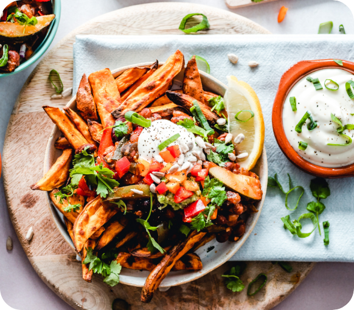
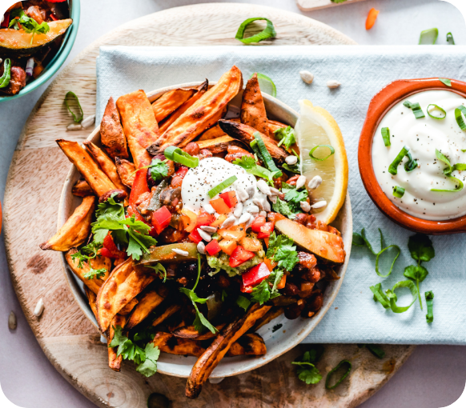

Ngoài những hãng thời trang nổi tiếng bậc nhất thế giới, đất nước Italia còn được coi là cái nôi của một nền ẩm thực có tầm ảnh hưởng vượt ra ngoài châu lục.
Ẩm thực Ý mang nét đặc trưng của miền biển Địa Trung Hải đơn giản, tập trung vào thành phần tự nhiên như cà chua, tỏi, dầu ô liu, rau xanh và ngũ cốc nguyên hạt. Điều này khiến cho nền ẩm thực của đất nước hình chiếc ủng trở thành nền ẩm thực lành mạnh nhất trên thế giới. Nếu như bạn đã từng được thưởng thức hương vị đồ ăn Pháp, bạn sẽ bị ấn tượng mạnh bởi những bữa ăn được chuẩn bị một cách cầu kỳ, phức tạp với những món nước sốt được làm cầu kì, công phu. Còn đồ ăn Ý lại là thái cực đối nghịch với sự phức tạp của nước Pháp, các món ăn trong ẩm thực nước Ý bất cứ ai cũng có thể nấu được, không quá nhiều thành phần, không mất nhiều thời gian và đặc biệt là ở mỗi vùng miền lại có những hương vị vô cùng khác biệt. Với nghệ thuật trang trí món ăn bậc thầy, nét ẩm thực nơi đây mang sắc thái vừa tinh tế, vừa lãng mạn vô cùng ấn tượng.
Những món ăn làm nên thương hiệu ẩm thực Ý
Pizza - niềm tự hào của người dân Ý với ý nghĩa là “điểm tròn” được ra đời vào thế kỉ 18 và nhanh chóng trở thành món ăn tiêu biểu cho phong cách pha trộn độc đáo. Món ăn này là sự kết hợp hoàn hảo của bột bánh mịn, lớp vỏ bánh mỏng được nướng đều tay, tạo thành lớp áo giòn thơm ngon. Phủ trên bánh là một lớp phô mai 5 mozzarella vàng óng, béo ngậy cùng lớp sốt cà chua mịn màng và trên mặt bánh rắc một chút lá thơm.
Pasta – món ăn mang các đặc điểm rõ rệt nhất của nghệ thuật ẩm thực Italia. Pasta trong tiếng Ý là tên gọi chung cho các loại nui, mì sợi,… làm từ bột mì. Tùy kích cỡ, hình dạng, nguyên liệu, xốt ăn kèm và cách chế biến mà pasta có tên gọi riêng: Pasta cọng dài là cọng mì dài, ống tròn nấu chung với xốt cà. Pasta ống gồm nhiều loại nui to, nhỏ, thẳng, cong, đầu vạt nhọn hay vạt thẳng,… Pasta có các hình thù đặc biệt khác như farfalle là loại nơ, conchiglie là loại nui hình con sò với đủ kích cỡ,… và pasta có nhân. Sợi Pasta thường là có màu vàng, song cũng có một số loại pasta có màu đỏ, đen hay xanh, pasta được phân làm 2 kiểu là pasta khô và pasta tươi. Thế nhưng có lẽ kiểu pasta phổ biển được yêu chuộng nhất của ẩm thực ý là kiểu mì Spaghetti sợi dài, dạng tròn nấu cùng với xốt cà..
Nếu so ẩm thực Pháp với tình yêu, giàu có, phức tạp và nồng nàn, ẩm thực Ý có lẽ giống tình bạn, rất tươi mới, thanh tao và sâu sắc. Họ ăn không phải để no, uống chẳng phải để say! Ẩm thực là cách họ thể hiện và chia sẻ tình yêu với miền đất của mình, với những điều tuyệt đẹp thiên nhiên ban tặng, và với những người thân yêu.
Những bài viết khác
Ẩm thực luôn là một trong những chủ đề được yêu thích và tìm kiếm trên internet. Vì vậy, chúng tôi sẽ cung cấp một số bài biết về ẩm thực của nhiều quốc gia khác nhau để các bạn có thể khám phá về ẩm thực thé giới


 


 (+84) 334455660
(+84) 334455660
 napithouse@gmail.com
napithouse@gmail.com